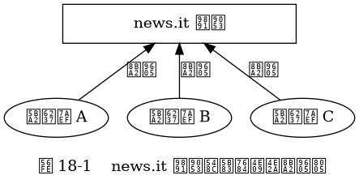
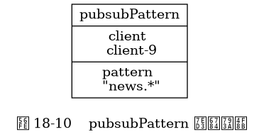

第 18 章： 发布与订阅¶
客户端订阅频道。

客户端向频道发送消息， 消息被传递至各个订阅者。
![digraph {
label = "\n 图 18-2 向 news.it 频道发送消息";
//
publish [label = "PUBLISH \"news.it\" \"hello\"", shape = plaintext];
news_it [label = "news.it 频道", shape = box, width = 3.0];
client_1 [label = "客户端 A"];
client_2 [label = "客户端 B"];
client_3 [label = "客户端 C"];
//
edge [style = dashed];
publish -> news_it;
edge [label = "\"hello\""];
news_it -> client_1;
news_it -> client_2;
news_it -> client_3;
}](_images/graphviz-277c178c09d23b463d202efac6c021eab85d0f59.png)
客户端订阅模式。
![digraph {
label = "\n 图 18-3 频道和模式的订阅状态";
rankdir = BT;
//
news_et [label = "news.et 频道", shape = box, width = 3.0];
news_it [label = "news.it 频道", shape = box, width = 3.0];
news_iet [label = "news.[ie]t 模式", shape = hexagon, width = 3.0];
node [shape = ellipse];
client_1 [label = "客户端 A"];
client_2 [label = "客户端 B"];
client_3 [label = "客户端 C"];
client_4 [label = "客户端 D"];
//
client_1 -> news_it [label = "订阅"];
client_2 -> news_et [label = "订阅"];
news_iet -> news_et [dir = back, label = "匹配"];
news_iet -> news_it [dir = back, label = "匹配"];
edge [label = "订阅"];
client_3 -> news_iet;
client_4 -> news_iet;
}](_images/graphviz-8612259c57ce1a92c32c3c2980a3eb14dc1ecc82.png)
客户端向频道发送消息， 消息被传递给正在订阅匹配模式的订阅者。
![digraph {
label = "\n 图 18-4 将消息发送给频道的订阅者和匹配模式的订阅者";
rankdir = BT;
//
news_et [label = "news.et 频道", shape = box, width = 3.0];
news_it [label = "news.it 频道", shape = box, width = 3.0];
news_iet [label = "news.[ie]t 模式", shape = hexagon, width = 3.0];
publish [label = "PUBLISH \"news.it\" \"hello\"", shape = plaintext];
node [shape = ellipse];
client_1 [label = "客户端 A"];
client_2 [label = "客户端 B"];
client_3 [label = "客户端 C"];
client_4 [label = "客户端 D"];
//
client_1 -> news_it [dir = back, label = "\"hello\"", style = dashed];
client_2 -> news_et [label = "订阅"];
news_iet -> news_et [dir = back, label = "匹配"];
news_iet -> news_it [dir = back, label = "匹配", style = dashed];
edge [dir = back, label = "\"hello\"", style = dashed];
client_3 -> news_iet;
client_4 -> news_iet;
news_it -> publish [dir = back, style = dashed, label =""];
}](_images/graphviz-e86ccacca7850f2d3d29c6e79adff39cd42de89a.png)
另一个模式被匹配的例子。
![digraph {
label = "\n 图 18-5 将消息发送给频道的订阅者和匹配模式的订阅者";
rankdir = BT;
//
news_et [label = "news.et 频道", shape = box, width = 3.0];
news_it [label = "news.it 频道", shape = box, width = 3.0];
news_iet [label = "news.[ie]t 模式", shape = hexagon, width = 3.0];
publish [label = "PUBLISH \"news.et\" \"world\"", shape = plaintext];
node [shape = ellipse];
client_1 [label = "客户端 A"];
client_2 [label = "客户端 B"];
client_3 [label = "客户端 C"];
client_4 [label = "客户端 D"];
//
client_1 -> news_it [label = "订阅"];
client_2 -> news_et [dir = back, label = "\"world\"", style = dashed];
news_iet -> news_et [dir = back, label = "匹配", style = dashed];
news_iet -> news_it [dir = back, label = "匹配"];
edge [dir = back, label = "\"world\"", style = dashed];
client_3 -> news_iet;
client_4 -> news_iet;
news_et -> publish [dir = back, style = dashed, label =""];
}](_images/graphviz-0a40b24a1eafde0cfc5bce787907a70eafcb5533.png)
pubsub_channels 字典示例。
![digraph {
label = "\n 图 18-6 一个 pubsub_channels 字典示例";
rankdir = LR;
//
node [shape = record];
pubsub_channels [label = " pubsub_channels | <news_it> \"news.it\" | <news_sport> \"news.sport\" | <news_business> \"news.business\" ", height = 3, width = 2.2];
client_1 [label = "client-1"];
client_2 [label = "client-2"];
client_3 [label = "client-3"];
client_4 [label = "client-4"];
client5 [label = "client-5"];
client6 [label = "client-6"];
//
pubsub_channels:news_it -> client_1; client_1 -> client_2; client_2 -> client_3;
pubsub_channels:news_sport -> client_4;
pubsub_channels:news_business -> client5 -> client6;
}](_images/graphviz-e90f7711725d2630884fd357d87b9a6f3d59e895.png)
pubsubPattern 结构示例。

pubsub_patterns 链表的示例。
![digraph {
label = "\n 图 18-11 pubsub_patterns 链表示例";
rankdir = LR;
//
node [shape = record];
redisServer [label = "redisServer | ... | <pubsub_patterns> pubsub_patterns | ...", height = 2.2, width = 2.2];
all_music [label = " pubsubPattern | client \n client-7 | pattern \n \"music.*\" "];
all_book [label = " pubsubPattern | client \n client-8 | pattern \n \"book.*\" "];
all_news [label = " pubsubPattern | client \n client-9 | pattern \n \"news.*\" "];
//
redisServer:pubsub_patterns -> all_music;
all_music -> all_book;
all_book -> all_news;
}](_images/graphviz-94b1e8bbff2b198925e6ac692de66f056d181158.png)
客户端订阅频道。
客户端向频道发送消息， 消息被传递至各个订阅者。
客户端订阅模式。
客户端向频道发送消息， 消息被传递给正在订阅匹配模式的订阅者。
另一个模式被匹配的例子。
pubsub_channels 字典示例。
pubsubPattern 结构示例。
pubsub_patterns 链表的示例。